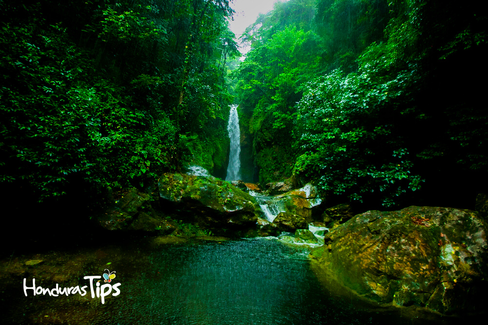

Ceibita la bella
Encontraras muy bellos sitios para relajarte
PARQUE NACIONAL PICO BONITO
La ceiba
Uno de los parques nacionales más ricos en biodiversidad de Honduras. Comenzando en las tierras costeras y remontándose hasta los 2,485 Metros Sobre el Nivel del Mar, el parque posee una diversidad de ecosistemas todavía inexplorada. Está asentado en la Sierra Nombre de Dios y posee una extensión de 1,073 kilómetros cuadrados de superficie. El parque recibe su nombre gracias a una de sus dos cimas (Pico Bonito es quizá la montaña más difícil de escalar del país). En esta enorme montaña siempre verde (quizá la montaña más alta frente al mar Caribe desde Colombia hasta la Florida), la vida salvaje está presente en todo momento. Jaguares, boas, monos y venados son personajes constantes. Junto a ellos, centenares de especies de flora permanecen todavía en espera de ser descubiertas por la ciencia.